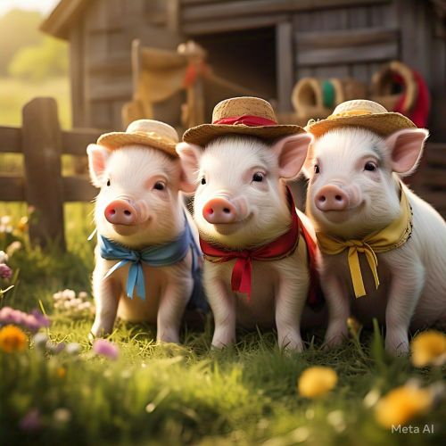
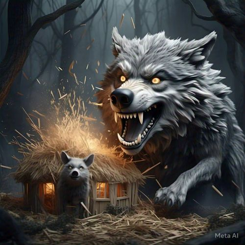
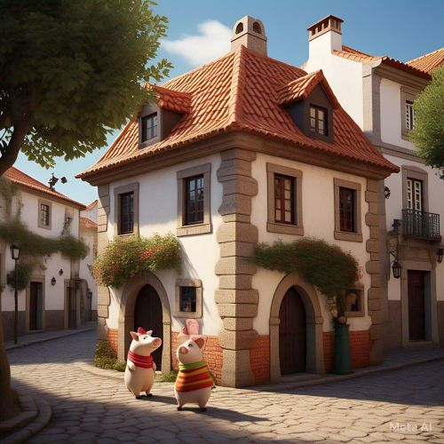

Os Três Porquinhos
Era uma vez três porquinhos que decidiram construir suas próprias casas. O primeiro porquinho, preguiçoso, construiu uma casa de palha. O segundo porquinho, um pouco mais esforçado, construiu uma casa de madeira. O terceiro porquinho, muito trabalhador, construiu uma casa de tijolos...
Um dia, o lobo mau apareceu e foi até a casa de palha. Ele soprou e soprou, e a casa de palha foi ao chão. O primeiro porquinho correu para a casa do segundo porquinho...
O lobo, então, foi até a casa de madeira. Ele soprou e soprou, e a casa de madeira caiu. Os dois porquinhos correram para a casa do terceiro porquinho...
O lobo, determinado a pegar os porquinhos, foi até a casa de tijolos. Ele soprou e soprou, mas a casa de tijolos não caiu...
